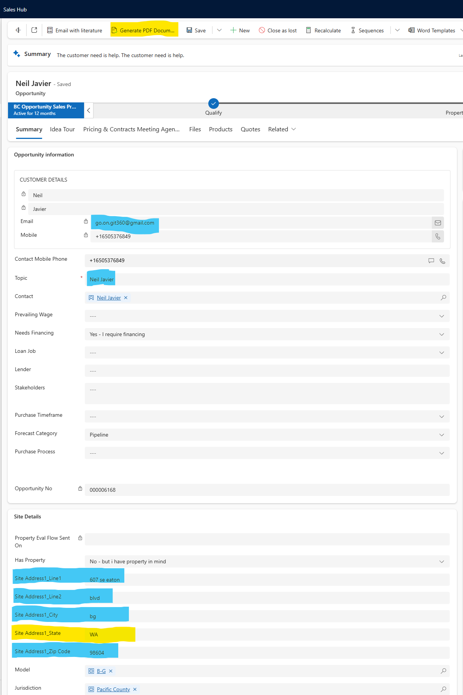
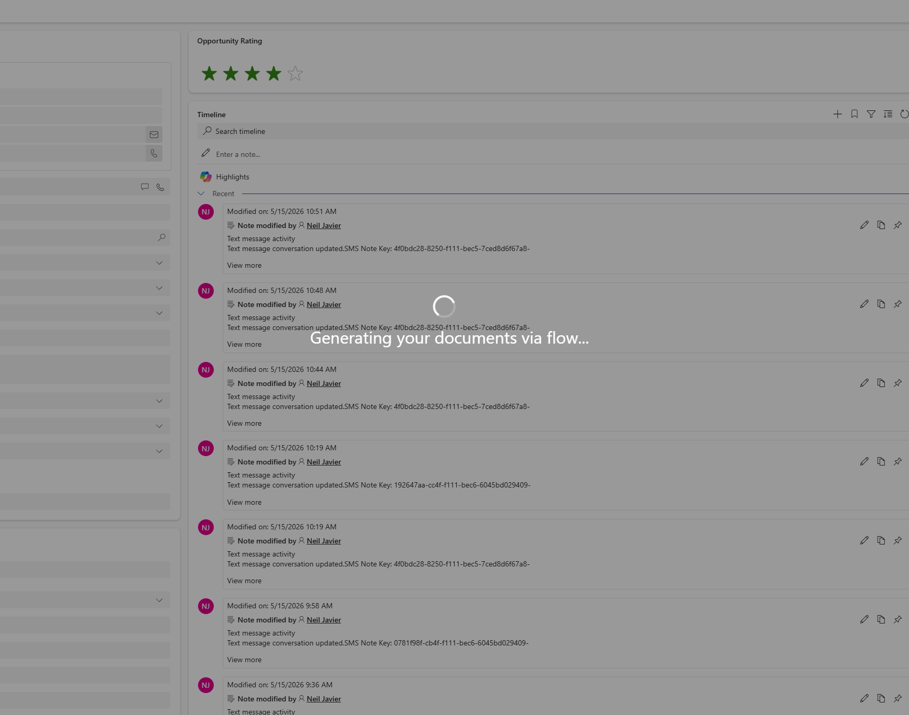
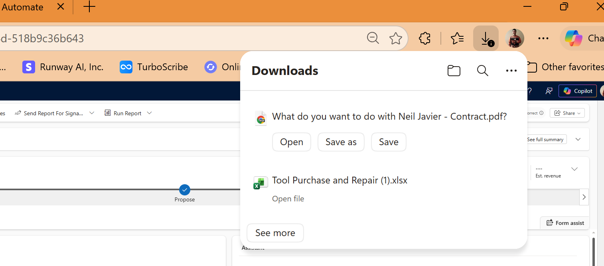
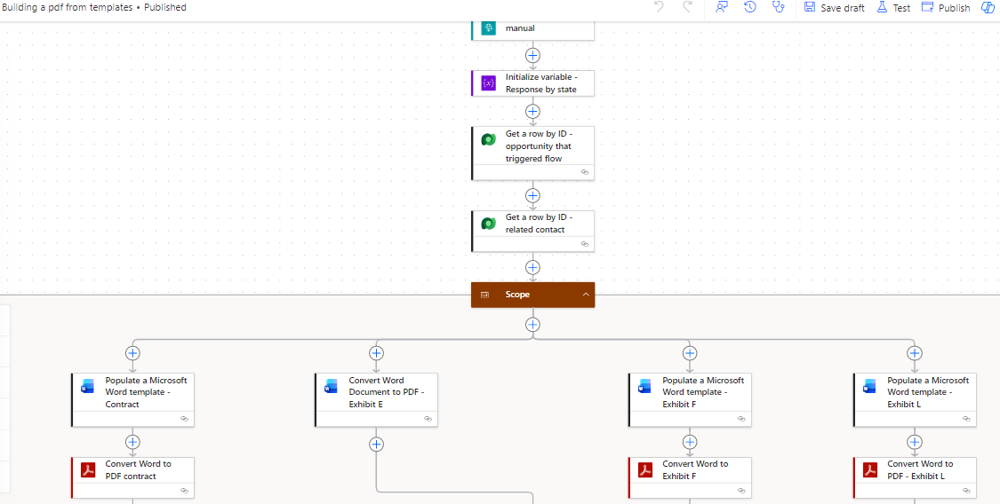
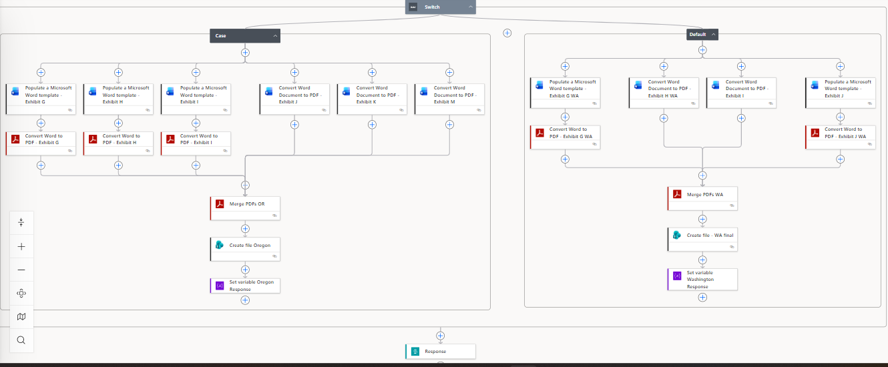
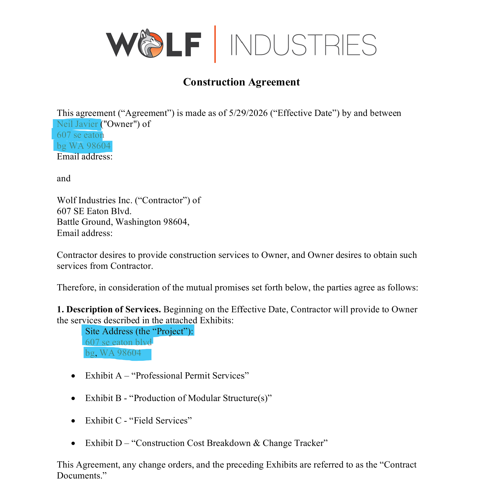

Project Summary
This project allows users to generate a customer contract PDF directly from a Microsoft Sales Hub Opportunity. A custom command bar button runs a JavaScript web resource, sends the current Opportunity ID to a Power Automate flow, and downloads the completed PDF when the flow finishes.
Custom Sales Hub Button
I created a custom command bar button in Sales Hub that gives users a simple, one-click way to start the document generation process from the Opportunity record.
Note: The highlighted button shows the custom ribbon action added to Sales Hub. When selected, the JavaScript web resource starts the document generation process and passes the current Opportunity record ID to the flow.

Web Resource Functionality
The JavaScript web resource captures the current Opportunity ID, sends it to a Power Automate flow, displays a progress indicator while the process runs, and triggers the PDF download when the flow returns a successful response.
// Captures the current Opportunity ID
const entityIdRaw = formContext.data.entity.getId();
const opportunityId = entityIdRaw.replace(/[{}]/g, "");
// Shows user feedback while the flow runs
Xrm.Utility.showProgressIndicator("Generating your documents via flow...");
// Sends the Opportunity ID to Power Automate
fetch(flowUrl, {
method: "POST",
headers: {
"Content-Type": "application/json",
"Accept": "application/pdf"
},
body: JSON.stringify({ opportunityId: opportunityId })
});
// Downloads the PDF returned by the flow
a.download = fileName;
a.click();
User Feedback During Processing
While the flow is running, Sales Hub displays a progress message so the user knows the document generation process has started and the system is working.

Automatic PDF Download
Once the Power Automate flow completes, the web resource receives the generated PDF response and automatically starts the file download for the user.

Power Automate Document Generation Flow
The flow receives the Opportunity ID from the Sales Hub button, retrieves the related Opportunity and Contact records from Dataverse, and prepares the customer and project data used to populate the contract documents.

State-Specific Contract Logic
The flow uses conditional logic to generate the correct contract package based on the project state. Oregon projects follow the Oregon contract branch, while Washington and other projects follow the Washington-specific document branch. Each branch populates the required Word templates, converts them to PDF, merges the final documents, and returns the completed file to the web resource.

Generated Contract Output
The final PDF shows customer and project information automatically populated into the contract template, including customer name, address, site address, and job-specific details. This reduces manual document preparation, improves consistency, and helps ensure the correct contract documents are generated for the customer’s project location.

Skills Demonstrated
Custom Sales Hub command bar button, JavaScript web resource, HTTP-triggered Power Automate flow, Dataverse record retrieval, dynamic Word template population, state-based business logic, PDF conversion, PDF merging, automated file response handling, and user-facing progress feedback.